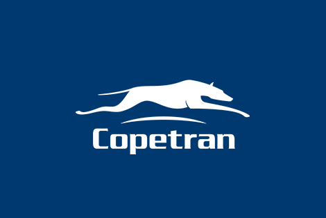

Generación E es un programa del Gobierno Nacional que le apunta a la transformación social y al desarrollo de las regiones del país a través del acceso, permanencia y graduación a la educación superior de los jóvenes en condición de vulnerabilidad económica.
Generación E permitirá que 336.000 jóvenes de todo el país puedan ingresar a la educación superior y tener más oportunidades para avanzar en su proyecto de vida.
“La educación es uno de los instrumentos más importantes para la generación de igualdad de oportunidades y desarrollo social, por eso le vamos a entregar a nuestros jóvenes las herramientas para tener un mejor futuro”
Presidente Iván Duque
El programa contiene tres componentes que ayudan a los jóvenes del país para acceder a la educación superior:
El programa contiene tres componentes que ayudan a los jóvenes del país para acceder a la educación superior:
Equidad: Avance en gratuidad por mérito en la Educación Superior pública.
Equipo: Fortalecimiento a las instituciones de Educación Superior Públicas.
Excelencia: Reconocimiento a los mejores bachilleres.
Estos componentes marcan la ruta de la educación superior de las próximas generaciones:
Acceso a la educación superior
El programa Generación E promueve el acceso a la educación superior a través de sus dos componentes de Excelencia y Equidad, cubriendo el valor de la matrícula y con la entrega de un apoyo de sostenimiento.
Bienestar y permanencia
El programa incluye una estrategia que facilita el desarrollo integral del estudiante y los empodera como una generación líder y corresponsable con la transformación de sus entornos y sus territorios. Conoce más aquí
De la inspiración a la acción
Generar espacios de inspiración a través de historias de jóvenes emprendedores, que conecten sus experiencias de éxito con los proyectos de vida de los jóvenes de Generación E, todo con el objetivo de llamarlos a la acción para que sean gestores de cambio, potencien sus talentos y aporten al desarrollo de sus entornos.
Potencializar y acompañar el desarrollo de talentos de los Jóvenes de Generación E, para una decisión efectiva en la construcción del proyecto de vida en tres temas de su interés:
Lo haremos mediante una plataforma de innovación abierta y espacios presenciales en 3 metodologías (experiencia interactiva, hackatón, bootcamp) y trascenderemos estos espacios con el acompañamiento de una Red de Aliados por cada uno de los temas mencionados.
Te invitamos a que consultes si eres candidato al programa Generación E y a que conozcas los tres componentes de la iniciativa.
Para avanzar en la gratuidad en la educación superior, este componente busca que más jóvenes en condición de vulnerabilidad económica tengan mayores oportunidades de acceder a la Educación Superior pública del país. Este componente beneficiará a 80.000 estudiantes por año, llegando a 320.000 estudiantes en el cuatrienio (2019 - 2022).
Equidad subsidia hasta 4 SMMLV* del valor de la matrícula cobrado por las Instituciones de Educación Superior públicas (IES) para programas de pregrado con registro calificado vigente (programa técnico profesional, tecnológico o universitario) bajo cualquier metodología (presencial, distancia o virtual).
Si estás interesado en ser parte de Equidad para iniciar estudios en el año 2021, ten en cuenta los siguientes requisitos**:
Nota: La fecha de corte de los registros Administrativos (SISBEN, Registro Único de Víctimas, Censo indígena del Ministerio del Interior) corresponderá con la última actualización que disponga el Ministerio de Educación Nacional al momento de realizar la verificación de los requisitos descritos en el presente artículo.
Adicionalmente, y con el propósito de acompañarte en tu proceso formativo, recibirás un apoyo de sostenimiento por el programa de Jóvenes en Acción del Departamento Prosperidad Social o con recursos del Ministerio de Educación Nacional. Consulta aquí si cumples los requisitos de Jóvenes en Acción.
* Salario mínimo legal vigente (SMMLV). en los casos en que el valor de la matrícula cobrado por las IES supere los 4 SMMLV, la diferencia del valor deberá ser asumida por el estudiante.
** La aprobación del beneficio está sujeta a la disponibilidad de cupos de cada IES.
*** Las Instituciones de Educación Superior (IES) realizan el reporte en el Sistema Nacional de Información de la Educación Superior -SNIES informando al Ministerio la condición del estudiante como admitido y matriculado en primer curso.
Este componente reconoce el mérito de jóvenes bachilleres que se han destacado en los resultados de la Prueba de Estado SABER 11°. Se beneficiarán 16.000 estudiantes en el cuatrienio que comprende 2019 – 2022, con una asignación de hasta 4.000 beneficios por año.*
El componente de Excelencia a través de la convocatoria otorga un crédito condonable para que financies el valor de la matrícula en una Institución de Educación Superior (IES) pública o privada que cuente con acreditación en alta calidad, o que tenga al menos el 25% de su oferta académica acreditada en alta calidad, y te entrega un apoyo para gastos académicos y/o generales – sostenimiento.
Ten en cuenta que dentro de los programas académicos que se consideran financiables por el componente de Excelencia encontrarás técnicos profesionales, tecnológicos y universitarios, todos en la modalidad presencial. (Conoce las IES y programas que hacen parte del componente).
Para el año 2021 se publicará un cronograma para cada semestre del año, con las fechas que deberás tener en cuenta para el desarrollo de los procesos de la convocatoria.
A continuación, presentamos el cronograma para el semestre 2 de 2021.
| Actividad | Inicio | Fin |
|---|---|---|
| Diligenciamiento Formulario No. 1 Aceptación manifestación de interés en participar | 18 de mayo de 2021 | 30 de julio de 2021 |
| Diligenciamiento Formulario No. 2 Inscripción presentación de la solicitud a la convocatoria 2 | 21 de mayo de 2021 | 19 de agosto de 20213 |
| Proceso de legalización | 24 de mayo de 2021 | 16 de septiembre de 2021 |
Debido a que puede presentarse un cierre anticipado y sin previo aviso de los formularios, te recomendamos culminar los procesos de aceptación e inscripción en el menor tiempo posible. Recuerda que si no cuentas con alguno de los requisitos dentro de las fechas establecidas en el cronograma o si realizas los procesos de convocatoria en fechas diferentes, no podrás ser considerado elegible para la convocatoria. Por lo que, te recomendamos consultar todos los documentos e información que se han preparado para orientarte.
Si te interesa participar en la convocatoria del componente de Excelencia debes cumplir los siguientes requisitos*
| Área | Puntaje máx. |
|---|---|
| 14 ciudades princípiales sin sus áreas metropolitanas: Bogotá, Medellín, Cali, Barranquilla, Cartagena, Cúcuta, Bucaramanga, Ibagué, Pereira, Villavicencio, Pasto, Montería, Manizales y Santa Marta. | 57,21 |
| Resto urbano: en la zona urbana diferente a las 14 ciudades principales, los centros poblados y la zona dispersa de las 14 ciudades principales. | 56,32 |
| Rural | 40,75 |
Únicamente se exceptuará del requisito del SISBEN si perteneces a población indígena, por lo que, deberás encontrarte registrado en la base censal del Ministerio del Interior, con corte del 30 de octubre del 2020.
El apoyo para gastos académico y/o generales – sostenimiento, depende del proceso de legalización y renovación de la matrícula de cada semestre por parte de cada beneficiario. El monto de este apoyo se establecerá por el ICETEX de acuerdo a las siguientes condiciones:
1SMMLV
Cuando la Institución de Educación Superior elegida se encuentra en la misma ciudad en donde cursó su bachillerato.
2SMMLV
Cuando la Institución de Educación Superior elegida queda en otro municipio diferente de donde cursó su bachillerato y su departamento contaba con Instituciones de Educación Superior acreditadas o con el 25% de su oferta académica de pregrado acreditada.
3SMMLV
Cuando la Institución de Educación Superior elegida queda en un municipio diferente de donde cursó su bachillerato y su departamento NO contaba con Instituciones de Educación Superior acreditadas o con el 25% de su oferta académica de pregrado acreditada.
En caso de que requieras información adicional los canales oficiales del Ministerio de Educación Nacional, del ICETEX y el correo electrónico excelencia@icetex.gov.co se encuentran disponibles para atenderte.
* La definición del número de cupos a ofertar se encuentra dentro de las facultades de la Junta Administradora del componente de Excelencia.
** Para ello el joven debe encontrarse con todos sus datos actualizados en la base certificada por el Departamento Nacional de Planeación con corte al 30 de octubre de 2020.
El Gobierno Nacional comprometido con el fortalecimiento de la Educación Superior Pública gestionó recursos adicionales de funcionamiento e inversión para que en equipo con las universidades e instituciones técnicas profesionales, tecnológicas y universitarias públicas sean destinados hacia el mejoramiento de la calidad del sector.


El Gobierno Nacional comprometido con el fortalecimiento de la Educación Superior Pública gestionó recursos adicionales de funcionamiento e inversión para que en equipo con las universidades e instituciones técnicas profesionales, tecnológicas y universitarias públicas sean destinados hacia el mejoramiento de la calidad del sector.
El Gobierno Nacional comprometido con el fortalecimiento de la Educación Superior Pública gestionó recursos adicionales de funcionamiento e inversión para que en equipo con las universidades e instituciones técnicas profesionales, tecnológicas y universitarias públicas sean destinados hacia el mejoramiento de la calidad del sector.
Los recursos y fuentes de financiación gestionados por el Gobierno Nacional para el fortalecimiento de la educación superior pública, en el marco de los acuerdos con los estudiantes, profesores y rectores en 2018 son:
2019: IPC más 3.5 puntos porcentuales
2020: IPC más 4 puntos porcentuales
2021: IPC más 4.5 puntos porcentuales
2022: IPC más 4.65 puntos porcentuales
Estos recursos harán base presupuestal e implican un crecimiento real de 17.7% por encima de la inflación durante 2019-2022, esfuerzo adicional por parte del Gobierno Nacional en cerca de $1,34 billones de pesos adicionales.
Las principales líneas de inversión son: i) Bienestar y permanencia de los estudiantes, ii) Cualificación docente, iii) Investigación, vi) Proyectos de regionalización y adecuación de la oferta e, iv) Infraestructura física, tecnológica y dotación.
Estos recursos están contemplados en el Plan Nacional de Desarrollo “Pacto por Colombia – Pacto por la Equidad”, particularmente en el artículo 183 de la Ley 1955.
Queremos que todos los jóvenes de Generación E se conecten con el aprendizaje de habilidades para la vida, la cultura, el deporte, la innovación, el entretenimiento y el tiempo en familia.
Gracias a la colaboración de entidades aliadas, tenemos una serie de descuentos y beneficios totalmente exclusivos para todos los estudiantes de Generación E.
“El hombre es sabio, no en proporción de su experiencia, sino de su capacidad para experimentar”.
George Bernard Shaw, escritor irlandés.

50% de descuento en el valor de la boletería, sin restricción de horario o sala y $5.000 valor de combo de crispetas y gaseosa.
¿Cómo acceder al beneficio?
Acercarte personalmente a las taquillas físicas de los Multiplex de Cineco a nivel nacional y presentar tu documento de identificación para verificar tu vinculación al programa Generación E. Podrás adquirir una (1) boleta para el ingreso y utilizar todos los medios de pago que Cineco tenga disponibles para tales efectos.
Call Center: (1) 404 24 63

Beca del 97% de curso online -English Live Solo- por un valor de USD $13 anuales. Podrás adquirir hasta 2 cursos EF sólo por 1 año.
¿Cómo acceder al beneficio?
Ingresa en la tienda virtual www.edured.edu.co/edustore, selecciona el Curso Beca Generación E English Live Solo y haz clic en añadir al carrito. Ingresa el código de descuento que se enviará previamente a tu correo electrónico, escribe tus datos para verificar que haces parte del programa Generación E y continua con el proceso de compra a través de los todos los medios dispuestos por la plataforma. El curso será activado el día cinco (5) del siguiente mes a la compra.
Call Center: (1) 926 17 53

4 clases en vivo al mes con profesores norteamericanos y uso ilimitado de la plataforma interactiva. Programa exclusivo para Generación E de 6 meses, con un precio especial de 40 USD.
¿Cómo acceder al beneficio?
Ingresa en www.openenglish.com/generacion-e, y llena la información que allí te solicitan. Una vez completado este proceso, se comunicarán contigo para verificar que hagas parte del programa Generación E y se realizará el proceso de pago por este mismo medio.
Call Center: 305 734 2122
Beca del 78% en cualquiera de los 24 cursos online de idiomas por un valor de COP $140.000 anuales. Podrás adquirir hasta 2 cursos por un año.
¿Cómo acceder al beneficio?
Ingresa en virtual.ipler.edu.co/es/cursos/curso-de-idiomas-rosetta-stone, selecciona el curso que desees y haz clic en añadir al carrito. Ingresa el código de descuento que se envió a tu correo electrónico, escribe tus datos para verificar que haces parte del programa Generación E y continua con el proceso de compra a través de los todos los medios dispuestos por la plataforma. El curso será activado el día cinco (5) del siguiente mes a la compra.
Call Center: (1) 616 70 70
30% de descuento en todos los tiquetes, incluyendo los que estén en promoción. En caso de ser menor de edad, el acompañante también tendrá derecho a este beneficio.
¿Cómo acceder al beneficio?
Ingresa en la página www.latam.com y busca tu vuelo. Envía un correo electrónico con el destino, fecha y hora a maria.daza@latam.com y una copia de tu cédula o tarjeta de identidad. Una vez verifiquen que haces parte del programa Generación E, se realizará la reserva que hayas solicitado con el descuento dado por la aerolínea. Si eres menor de edad y viajas con un acompañante (papá, mamá o acudiente) deberás enviar también copia de su documento.
Call Center: (1) 745 20 20

40% de descuento en tiquetes en temporada baja y 15% en temporada alta.
¿Cómo acceder al beneficio?
Acércate personalmente a las taquillas físicas de Copetrán a nivel nacional y presenta tu documento de identificación. Una vez verifiquen que haces parte del programa Generación E, podrás acceder al beneficio realizando el pago con tarjeta o en efectivo.
Call Center: (1) 592 04 00

20% de descuento sobre la tarifa neta (sin impuestos) de las tarifas públicas Plus, Flexi, y Econo. No aplicable para tarifas promocionales de la aerolínea.
¿Cómo acceder al beneficio?
Acércate personalmente a los puntos de venta SATENA autorizados, presenta tu documento de identificación para verificar que haces parte del programa Generación E. Te informarán la disponibilidad de sillas y si el descuento está disponible para su aplicación. Podrás realizar el pago a través de los todos los medios dispuestos por la aerolínea
Call Center: (1) 605 22 22
Descuento de los aliados de Tarjeta Joven enfocados en turismo y transporte
¿Cómo acceder al beneficio?
Regístrate en la página web o en la aplicación móvil de Tarjeta Joven, selecciona la oferta de tu interés y haz clic sobre ella. Ingresa los datos que te solicitan para verificar que haces parte del programa Generación E y después podrás realizar el pago a través de los todos los medios dispuestos por la plataforma.
Call Center: (1) 616 60 44
20% de descuento en tiquetes de las rutas Medellín - Costa o viceversa y Bogotá - Costa o viceversa.
¿Cómo acceder al beneficio?
Acércate personalmente a las taquillas físicas de Rápido Ochoa en las terminales de transporte o a los puntos de venta físicos del área de pasajeros que se encuentren sistematizados y presenta tu documento de identificación. Una vez verifiquen que haces parte del programa Generación E, podrás acceder al beneficio realizando el pago con tarjeta o en efectivo.
Call Center: (4) 444 8888

20% de descuento sobre el precio de venta al público de todos los libros disponibles en el catálogo actual.
¿Cómo acceder al beneficio?
Ingresa en la página www.libreriadelau.com/generacione, selecciona el libro que deseas comprar y llena los datos que te solicitan para verificar que formas parte del programa Generación E. En caso de tratarse de libros impresos, se realizará un cobro adicional de envío, con cobertura nacional.
Call Center: (1) 269 99 50
90% de descuento en los cursos de lectura comprensiva o de método de estudio por un valor de COP $49.000 (Acceso: tres meses). Podrás adquirir hasta 2 cursos por un año.
¿Cómo acceder al beneficio?
Ingresa en https://virtual.ipler.edu.co/es/cursos/cursolectura-comprensiva/ o https://virtual.ipler.edu.co/es/cursos/curso-metodo-estudio/, selecciona el curso que desees y haz clic en añadir al carrito. Ingresa el código de descuento que se envió a tu correo electrónico, escribe tus datos para verificar que haces parte del programa Generación E y continua con el proceso de compra a través de los todos los medios dispuestos por la plataforma. El curso será activado el día cinco (5) del siguiente mes a la compra.
Call Center: (1) 616 70 70

Formación en programas digitales y de emprendimiento a través de los cursos de Conecta Empleo.
¿Cómo acceder al beneficio?
Ingresa en www.fundaciontelefonica.co/empleabilidad/cursos-online y selecciona el curso de tu interés. Recuerda verificar previamente el calendario para que sepas cuándo puedes acceder al curso que te interesa. Una vez hayas cumplido mínimo con el 85% del curso, deberás enviarnos un comprobante para hacerte entrega de una certificación por parte de Telefónica.
Call Center: (1) 705 00 00
Invitamos a todos los jóvenes de Generación E que estén interesados en potenciar sus proyectos de vida, a que ingresen a la plataforma de innovación social: Inspiraccion.inn.
Queremos que esta generación pase de la inspiración a la acción y por eso les brindamos herramientas y experiencias encaminadas a transformar realidades en tres temas: Emprendimiento, Empleabilidad y Soluciones locales a retos locales.
Inscripciones abiertas para estudiantes al Programa de Mentorías
Bienvenidos a la plataforma de mentoría de Generación E, una herramienta para que los jóvenes que hacen parte del programa puedan recibir acompañamiento, orientación, herramientas para mejorar su desempeño académico y contenidos para potenciar sus talentos y sus competencias del siglo XXI.
El programa de Mentorías busca acompañar el crecimiento personal y profesional de estudiantes como tú, que quieren recibir herramientas para la construcción de su proyecto de vida, la adaptación a su proceso universitario y el desarrollo de habilidades y competencias para el siglo XXI. Durante la mentoría estarás acompañado y serás escuchado por un MENTOR.
Te contamos que las mentorías son experiencias que se caracterizan por una relación de aprendizaje entre pares en la que un estudiante de semestre avanzado (mentor), escucha y acompaña a otro estudiante que inicia su vida universitaria.
Para inscribirte solo debes diligenciar el formulario:
Formulario si quieres MENTORÍAS
Informes: en la Oficina de Bienestar Universitario, oficinas de Asuntos Estudiantiles o de apoyo a la permanencia de tu Institución de Educación Superior.
Para inscribirte solo debes diligenciar el formulario:
Informes: en la Oficina de Bienestar Universitario, oficinas de Asuntos Estudiantiles o de apoyo a la permanencia de tu Institución de Educación Superior.